Prefeitura · inicio · 1920 px

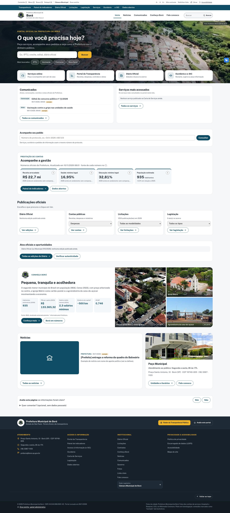
Antes: produção (largura fixa 1320 px, margem 24 px). Depois: prévia com cópia dos bancos reais e o código da branch largura-fluida (largura até 1760 px, margem clamp(16px, 3.5vw, 64px)). Nenhum dado foi alterado.
| órgão | página-largura | antes | depois | colunas antes | colunas depois | rolagem horizontal? |
|---|---|---|---|---|---|---|
| Prefeitura | inicio-1920 | 1320 / 24px | 1760 / 64px | .atalhos 4, .ics 4, .pub-cartoes 4 | .atalhos 4, .ics 4, .pub-cartoes 4 | não |
| Prefeitura | noticias-1920 | 1320 / 24px | 1760 / 64px | — | — | não |
| Prefeitura | transparencia-1920 | 1320 / 24px | 1760 / 64px | — | .servicos 4 | não |
| Prefeitura | painel-1920 | 1320 / 24px | 1760 / 64px | — | .ics 6 | não |
| Prefeitura | inicio-1366 | 1320 / 24px | 1366 / 47.81px | .atalhos 4, .ics 4, .pub-cartoes 4 | .atalhos 4, .ics 4, .pub-cartoes 4 | não |
| Prefeitura | noticias-1366 | 1320 / 24px | 1366 / 47.81px | — | — | não |
| Prefeitura | transparencia-1366 | 1320 / 24px | 1366 / 47.81px | — | .servicos 4 | não |
| Prefeitura | painel-1366 | 1320 / 24px | 1366 / 47.81px | — | .ics 5 | não |
| Prefeitura | inicio-390 | 390 / 24px | 390 / 16px | .atalhos 1, .ics 1, .pub-cartoes 1 | .atalhos 1, .ics 1, .pub-cartoes 1 | não |
| Prefeitura | noticias-390 | 390 / 24px | 390 / 16px | — | — | não |
| Prefeitura | transparencia-390 | 390 / 24px | 390 / 16px | — | .servicos 1 | não |
| Prefeitura | painel-390 | 390 / 24px | 390 / 16px | — | .ics 1 | não |
| Câmara | inicio-1920 | 1320 / 24px | 1760 / 64px | — | .atalhos 4, dl.kpis 2, ul.vers 5 | não |
| Câmara | inicio-1366 | 1320 / 24px | 1366 / 47.81px | — | .atalhos 4, dl.kpis 3, ul.vers 5 | não |
| Câmara | inicio-390 | 390 / 24px | 390 / 16px | — | .atalhos 1, dl.kpis 1, ul.vers 1 | não |
Na Câmara, ul.vers conta 5 itens por fileira: o cartão da presidência ocupa 2 trilhas (6 trilhas no total).

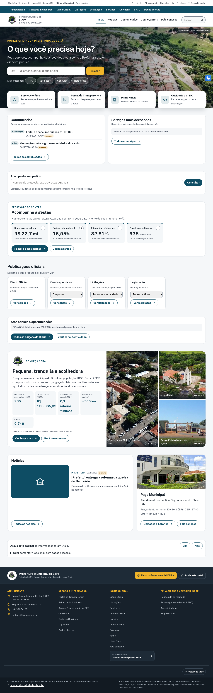
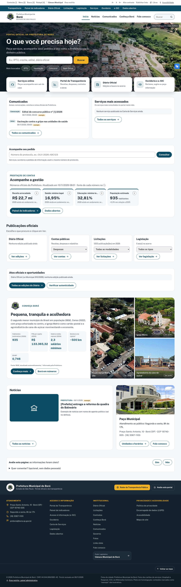

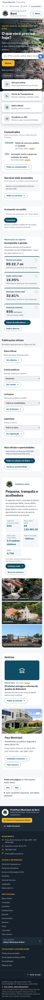


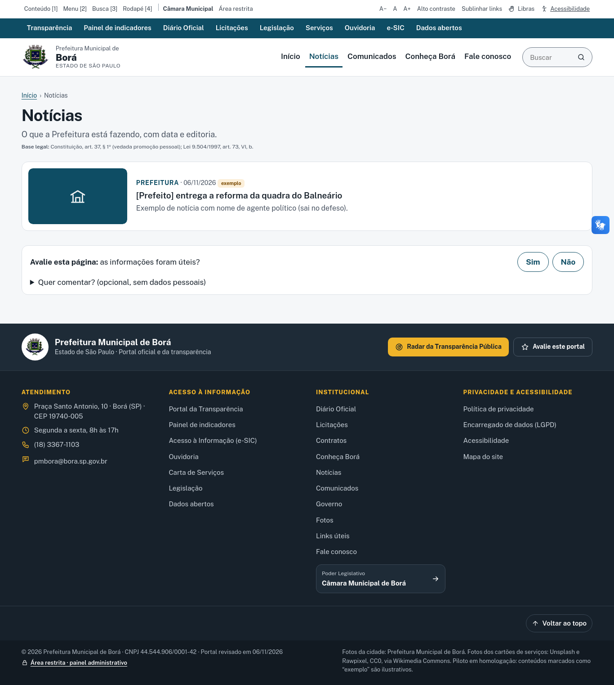


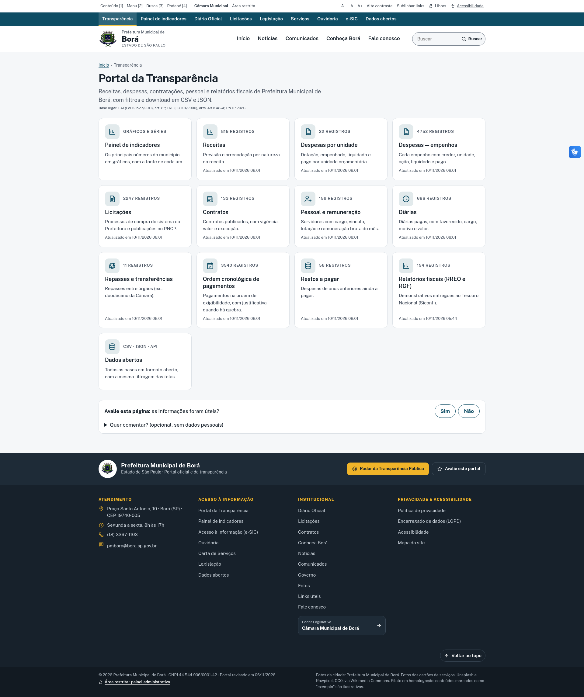
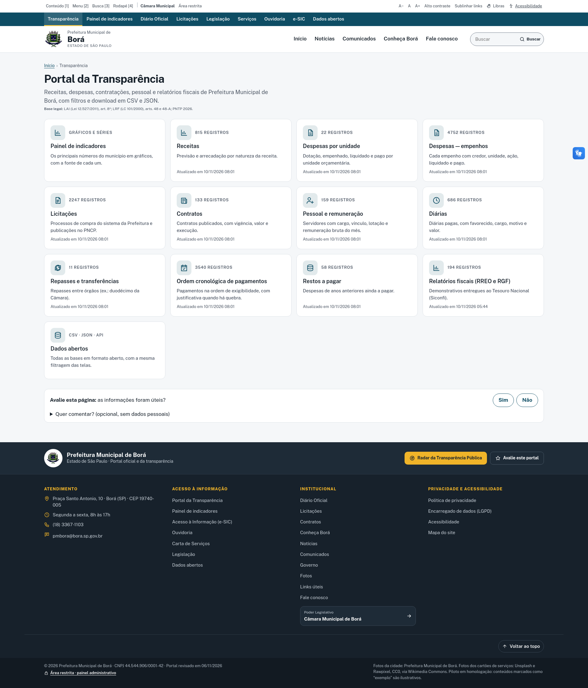
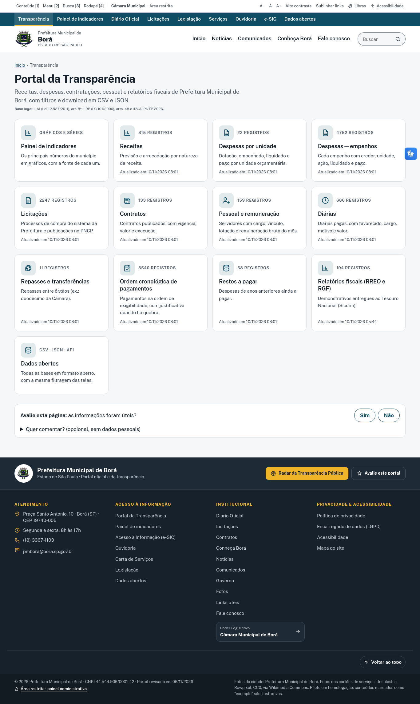
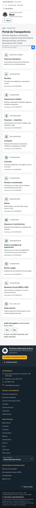
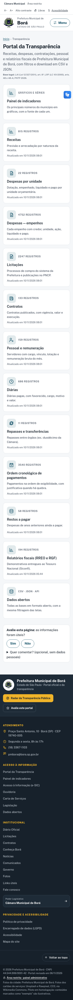

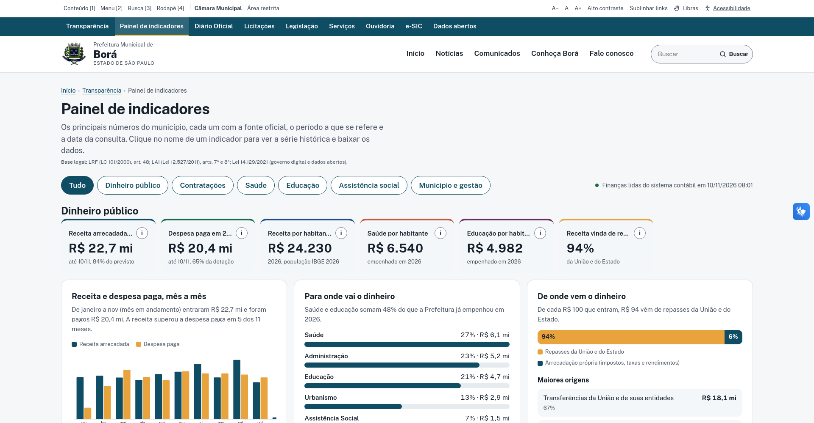

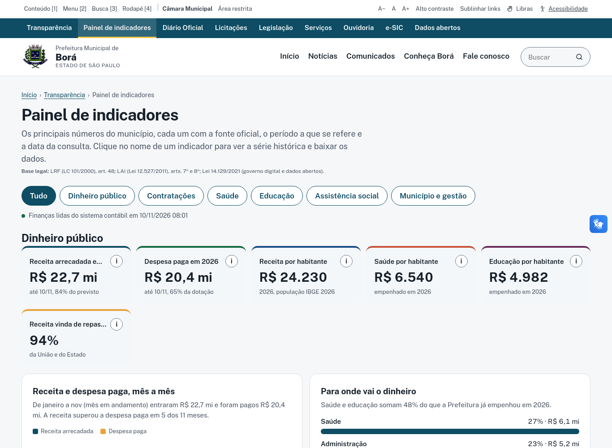

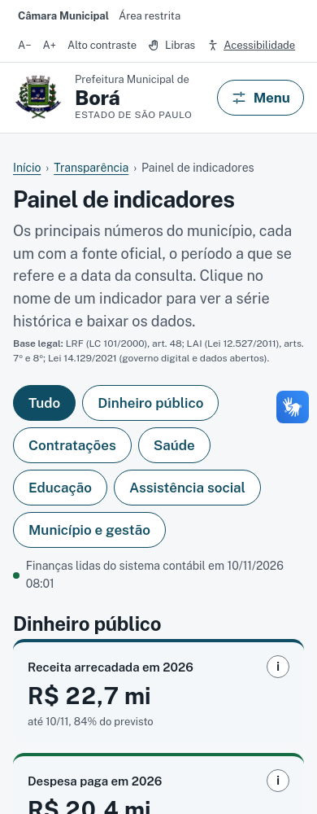
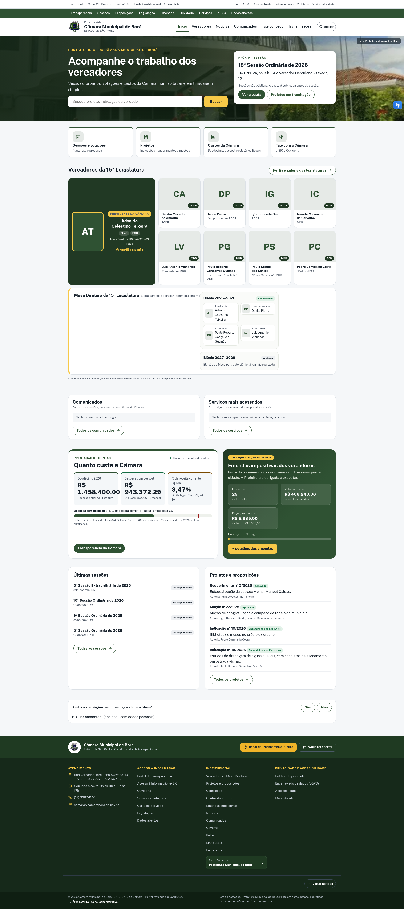
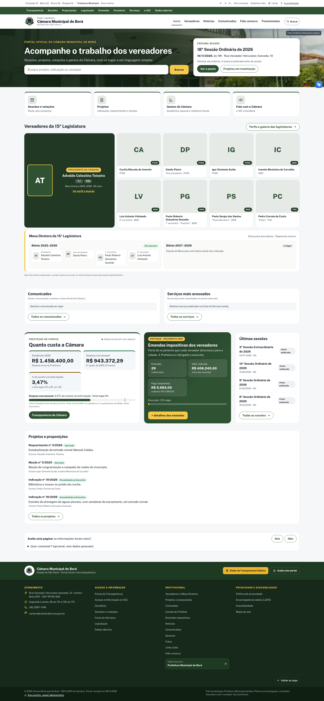
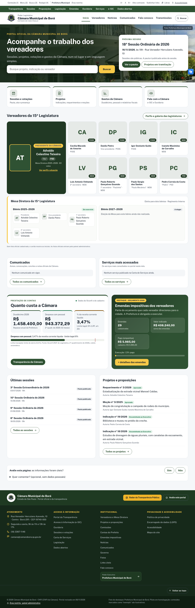